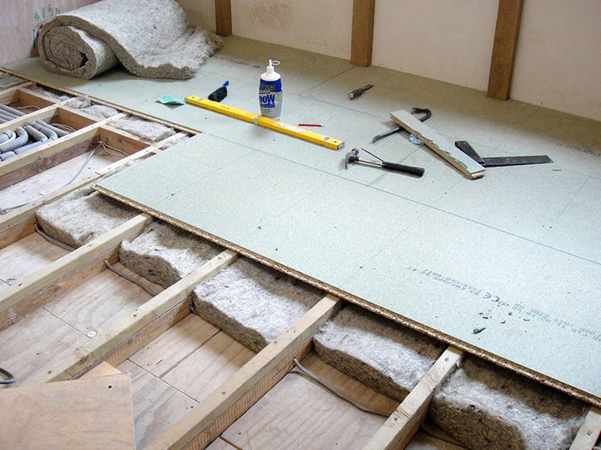
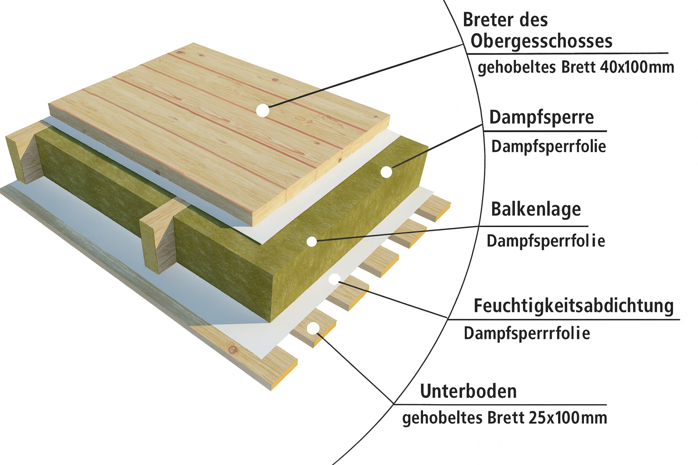

Bodenaufbau im Holz-Gartenhaus: Welche Unterkonstruktion bleibt wirklich trocken?
Viele Gartenhäuser sehen von aussen schön aus, haben aber ein Problem: Der Boden wird kalt, feucht oder beginnt nach ein paar Jahren zu faulen. Entscheidend ist nicht nur die Wand, sondern der richtige Bodenaufbau. In diesem Beitrag geht es darum, wie man ein Holz-Gartenhaus so unterbaut, dass der Boden trocken und stabil bleibt.

1. Was der Boden im Gartenhaus leisten muss
Bevor man über Details spricht, hilft ein kurzer Blick auf die Nutzung:
- Nur Lager: Rasenmäher, Werkzeuge, Möbel – hier geht es vor allem um Tragfähigkeit und einfache Reinigung.
- Aufenthalt: Hobbyraum, kleines Büro, Spielhaus – zusätzlich wichtig sind Fusswärme und ein angenehmes Raumklima.
- Werkstatt: punktuelle Lasten durch Maschinen, Werkbänke und Regale.
Unabhängig von der Nutzung gilt: Holz mag keine stehende Feuchtigkeit von unten. Der Aufbau muss so geplant sein, dass Wasser abfliessen kann und Luft unter oder im Boden zirkuliert.
2. Untergrund: Punktfundamente, Schraubfundamente oder Platte?
Für Gartenhäuser gibt es drei gängige Varianten, auf denen die Holzunterkonstruktion aufliegt:
2.1 Punktfundamente
Ein Klassiker sind Beton-Punktfundamente an den tragenden Ecken und Linien des Hauses. Darauf werden Metallanker oder Holzschwellen aufgesetzt.
- wenig Beton, relativ geringe Kosten
- der Boden bleibt unterlüftet – gut gegen Feuchtigkeit
- wichtig: Fundamente frostfrei gründen oder zumindest einheitliche Tiefe
2.2 Schraubfundamente
Erdschrauben sind eine Alternative, wenn man nicht betonieren möchte. Sie werden in den Boden eingedreht und bilden die Auflagerpunkte.
- kaum Aushub, wenig Baustellenschmutz
- sofort belastbar, keine Wartezeit zum Aushärten
- geeignet, wenn der Boden nicht zu steinig ist
2.3 Betonplatte mit Holzunterkonstruktion
Eine Betonplatte ist stabil und komfortabel, aber nur dann sinnvoll, wenn das Wasser sauber abgeleitet wird. Für ein Holz-Gartenhaus bauen wir auf die Platte meist noch eine Holzunterkonstruktion:
- Holzbalken auf Trennlage (z. B. Gummigranulat, Lagerklötze)
- dazwischen optional Dämmung
- oben der eigentliche Holzboden
Wichtig: Holz nie direkt ohne Trennung auf blanken Beton legen, sonst zieht Feuchtigkeit ein und es kommt schnell zu Schäden.
3. Die Holzunterkonstruktion richtig planen
Die Holzunterkonstruktion trägt die Lasten des Gartenhauses und verteilt sie auf die Fundamente. Hier ein paar Punkte aus der Praxis:
- Balkenabstand: je nach Brettstärke und Nutzung sollte der Abstand der Lagerhölzer so gewählt werden, dass der Boden nicht „federt“. Für übliche Dielen sind 40–60 cm ein guter Bereich.
- Holzqualität: Konstruktionsvollholz oder gut getrocknete Balken, möglichst gerade und ohne starke Drehwuchs.
- Abstand zum Boden: genügend Luft zwischen Erde/Platte und Holz, damit es abtrocknen kann.
- Querverbände: Aussteifungen verhindern, dass der Rahmen „wandernde“ oder sich verzieht.
Alle Holzteile im Spritzwasser-Bereich sollten möglichst konstruktiv geschützt sein, z. B. durch Abdeckungen, Tropfkanten und ausreichenden Abstand zum Gelände.
4. Dämmung im Boden – braucht man das?
Ob der Boden gedämmt werden soll, hängt davon ab, wie das Gartenhaus genutzt wird:
- reiner Geräteschuppen: meist reicht ein einfacher Holzboden ohne Dämmung.
- Hobbyraum oder Büro: eine Dämmschicht im Boden sorgt für deutlich mehr Komfort.
- ganzjährig genutztes Gartenhaus: hier sollte der Boden wie ein einfacher Fussbodenaufbau geplant werden.
Als Dämmung werden häufig Mineralwolle oder druckstabile Platten (z. B. Holzfaser oder Hartschaum) verwendet. Wichtig ist, dass sie sauber zwischen den Balken liegt und gegen Feuchtigkeit von unten geschützt ist.
5. Typische Fehler beim Bodenaufbau im Gartenhaus
In der Praxis sehen wir immer wieder ähnliche Probleme:
- Holz direkt auf Erde oder Kies: der Boden zieht dauerhaft Feuchtigkeit, das Holz fault von unten her.
- keine Unterlüftung: geschlossene Sockelbereiche ohne Luftstrom führen zu Schimmel und Modergeruch.
- zu grosse Spannweiten: der Boden federt, Dielen knarren und Verbindungen lösen sich.
- fehlende Trennlagen auf Beton: Feuchte wandert in die Holzunterkonstruktion.
Ein durchdachter Bodenaufbau spart hier viel Ärger. Oft ist es besser, ein kleines Haus etwas höher zu setzen und sauber zu unterlüften, als es „schön niedrig“ dicht über den Boden zu legen.
6. Fazit: Erst der Boden, dann die schöne Fassade
Ein Gartenhaus, das von unten trocken bleibt, ist wesentlich langlebiger und angenehmer zu nutzen. Grundlage ist eine passende Kombination aus Fundament, Holzunterkonstruktion und – wenn gewünscht – Dämmung.
Wer hier sorgfältig plant, hat später weniger Probleme mit schiefen Türen, faulen Ecken und kalten Füssen. Erst wenn der Boden stimmt, lohnt es sich, über Farbe, Innenausbau und Einrichtung nachzudenken.